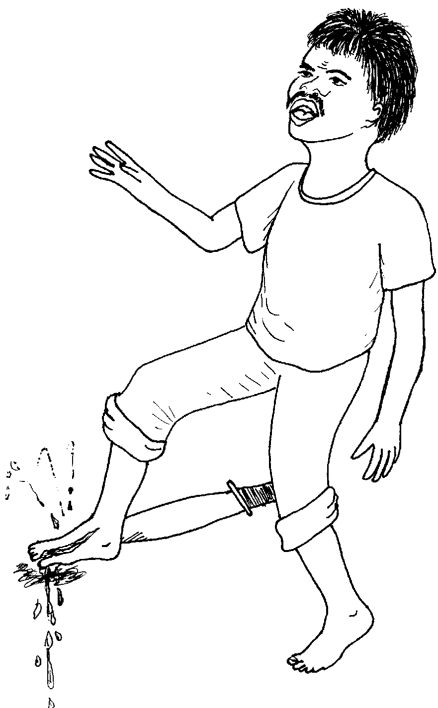
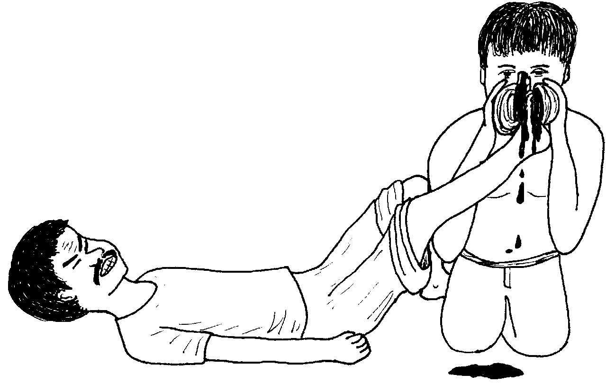
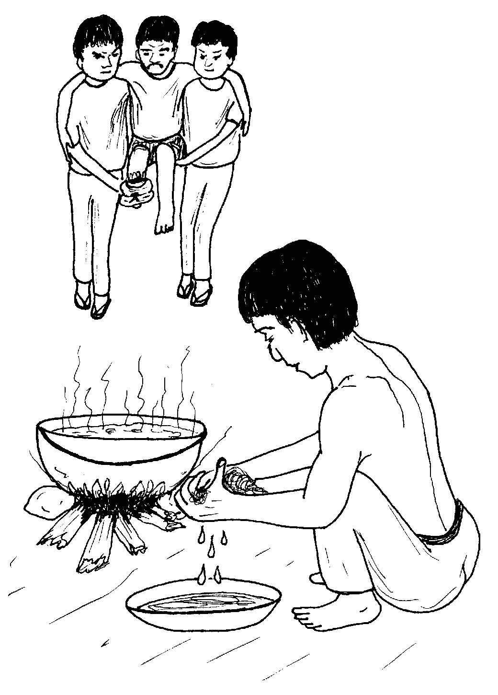
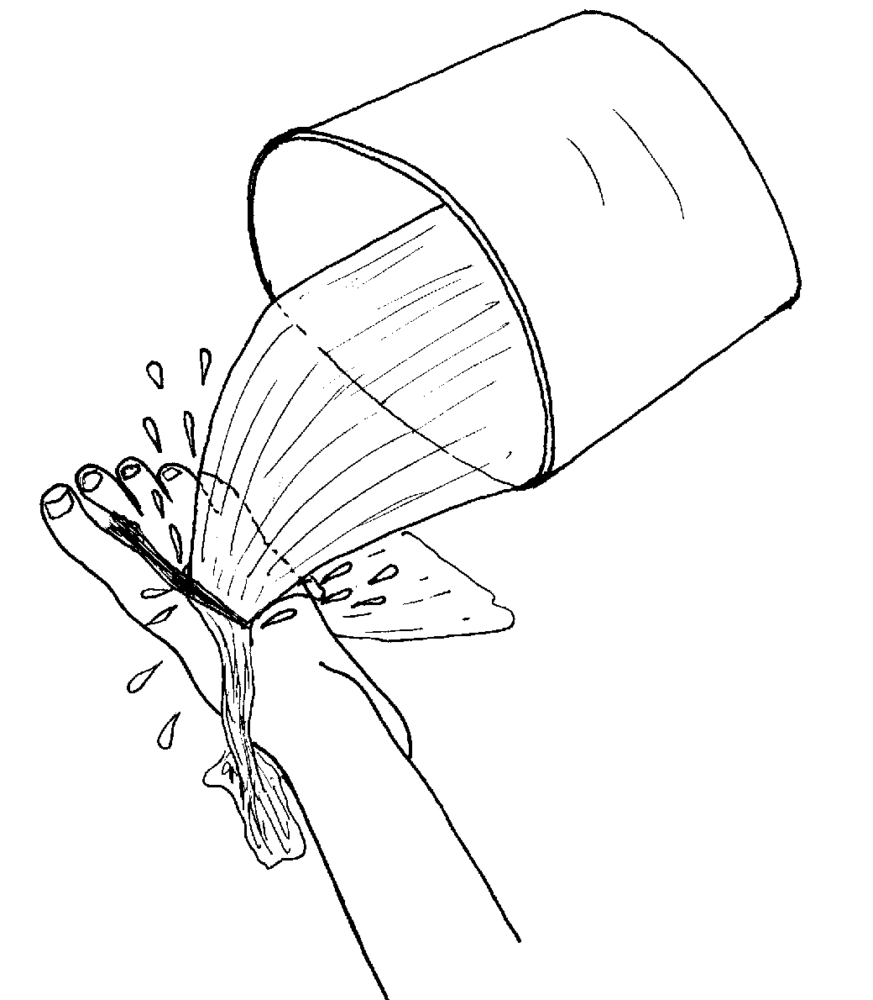
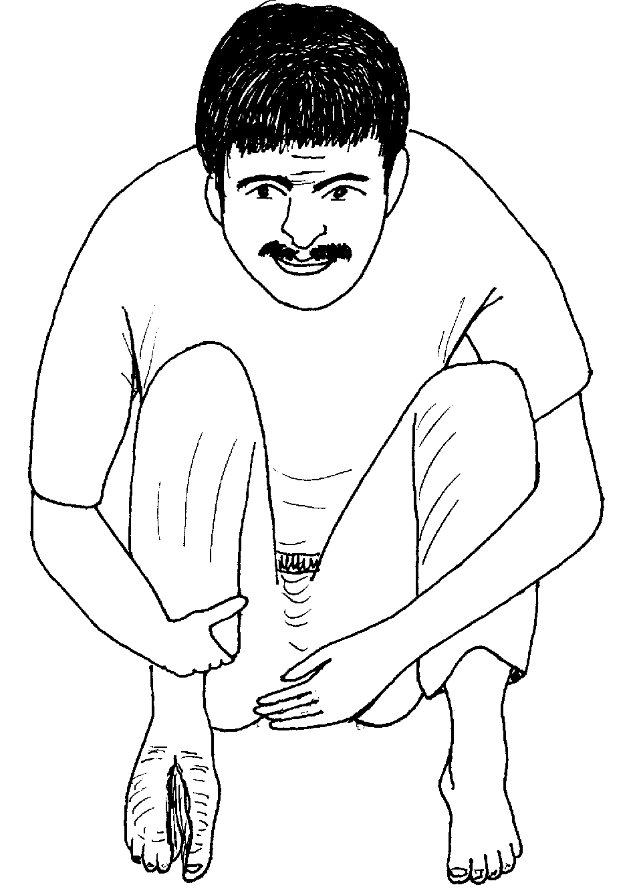
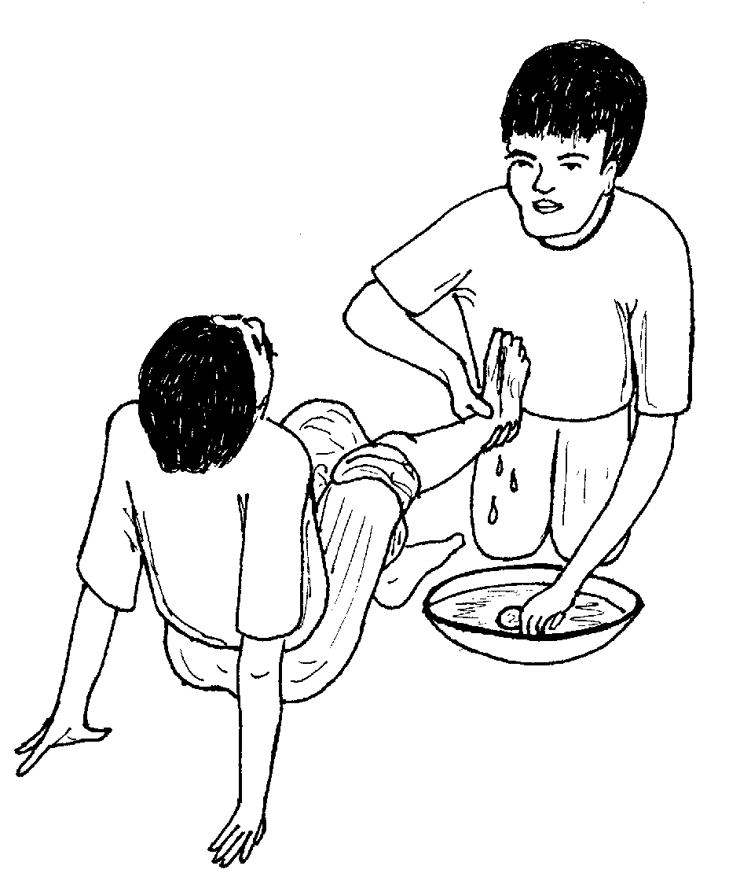
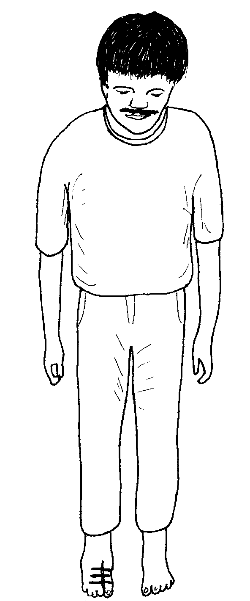

Matigsalug Manobo Healthbooks
Previous Healthbook Up to main Healthbooks page Next Healthbook
Vernacular Lexicon
A
B
BAP
BL
D
E
G
H
I
K
KI
L
LA
LIP
M
N
O
P
PA
R
S
SE
SIN
T
TE
TIN
U
V
W
Y
Z
Healthbooks
Sabeka ne aldew, ensi Inuk, si Biltu wey duman me lukes diyet bariyu, nangekamet eyew egpammulaan te me gulay.
Sahuhunen nakarineg ka me etew ki Biltu te migpanguleyi.
Indugpu dan si Biltu wey nakita ran ne natibbas sikandin te ugpit.

Naaldek sikandan tenged te dakel ne langesa te pali din.
Ne migkahi si Inuk te, “Keilangan neg dagdahawan ta sikandin teg tanggu su eyew egkasanggel ka langesa neg sirit su kema ke egkaaminan sikandin te langesa.”

Ne mig-abey man-e sikandin migkahi te, “Mahaan buwa egpatey sikandin ke egkaawaan te dakel ne langesa.”
Impaley-ang ni Inuk si Biltu diyet tane. Ne ingkahiyan din ka sabekan etew te igpakayew ka napalian ne paa.
Inluung ni Inuk ka kumbale din wey inlupi din su igparapi din te pali ni Biltu.
Ne nataman, imparapi din e te pali ni Biltu duma te pegtenes te meemen, taman te warad migsirit ka langesa.
Amanan neyinghingesa si Inuk tenged su kenad eglangesa ka pali ni Biltu.
Ne migkahiyan din ka duman me lukes te, “Iyan meupiya neg gimuwen ta ka egkuwa te malinis ne manggad ne igparapi te pali ni Biltu wey igdakesel te meemen taman te kenad eglangesa ka pali.”
Ne mig-abey man-e sikandin migkahi te, “Emun keg keempet e te langesa ka kumbale ne indakesel nu, keilangan neg kuwa ka man-e te lain ne igparibabew nu wey ipabulus nu teg dakesel ka pali. Emun ware lain ne kumbale neg kahamit, tenesan de te belad nu ka pali.”
Ne migkahi man-e sikandin te, “Keilangan ne igpaley-ang nu ka etew wey kayawa nu ka napalian su eyew kene din egkalipung.”
Ne migkahi si Inuk te, “Bulihi e pa nikaniyu teg yayung ki Biltu su eglinisan ku pad ka pali din.
“Su egkekehang ka pali din wey egkaayun neg katitanus ke keneg kalinisan, ne kema keg deralu rin e.”

Ne impahanganaran e yayunga te me etew si Biltu diyet bariyu. Pegkeuma te baley, impanlu-lu e te belad si Inuk wey migpekale-kale te weyig ne insubukan te dewun te beyabas ne ig-itis te pali ni Biltu.
Ne hengkahi se nabewu e ka weyig, henduen pad ne ingkuwa ni Inuk eyew ig-itis te pali ni Biltu. Ne migkuwa rin te malinis ne manggad ne insebunan ne ig-awe te bilu diyet pali ni Biltu, ne nataman, mig-itisan din e te weyig.
In-ay-ayaran ni Inuk teg linis ka pali ni Biltu sug kaaldek din kema keg sirit e man-e ka langesa.
Ne mig-inse si Biltu te, “Mania te in-init nu pad ka weyig?”
Ne migtabak si Inuk te, “Keilangan amana neg initen pad su eyew keneg pakaseled ka me kahew diyet pali. Su egkekapatey ka me kahew emun keg initen ka weyig.”
Ne mig-inse e man-e si Biltu, “Ke ware niyu ga-gaani teg dakesel ka pali ku, egpatey e buwa perem tenged te makeseg neg sirit ka langesa ku?”
Ne migtabak si Inuk te, “Uya, su eleg de ka langesa ta kayit lawa ta. Emun ke dakel e ne langesa ka egkaawe kayit lawa ta, egmahuye ki neg kataman egpatey ki.”
Kahi man-e ni Inuk, “Su egpatey ki ke ware langesa ta.”
Ne migkahi si Inuk te, “Meupiya pad keg gendiye ka te huspital wey egpeindiksyun eyew kene kag titanusen.
“Sengekakuwa ne egtitanusen ka minsan hentew ne me etew neg kapalian iling keykew.”
Ne mig-abey man-e sikandin ka migkahi te, “Sikan naa ka keilangan neg linisan ka pali iling te inggimu ku.”
Ne mig-inse si Biltu, “Egteyien nu naa diyet diralem te pali ku su eyew egkapegket ded?”
Ne migtabak si Inuk te, “Kene, su bayew pad malindit ka pali nu, mas meupiya emun ke kene egteyien.
“Su emun ke egteyien ka pali, keneg pakalihawang ka kahew diyet pali neg kataman egkekehang e.”
Migpasalamat amana si Biltu ki Inuk. Ne mig-inse sikandin te, “Nekey naan e kag gimuwen ku kuntee?”
Ne migkahi si Inuk te, “Keilangan neg linisan nu ka pali nu. Ay-ayari nu teg linis iling te inggimu ku wey bukusi nu te malinis ne manggad te maselem wey marusilem su eyew wareg pakaseled ne malindit.”

Ne migpabulus man-e sikandin ka migkahi te, “Emun keg kekehang ka pali nu, keilangan neg gendiye ka te health worker eyew egbuyu te antibayutik.”
Ne henduen pad mig-uli si Biltu diyet baley ran. Piru ware din tumana ka impanulu ni Inuk meyitenged te peglinis te pali.

Migginguma ka pilan aldew, naseleran e te kahew ka pali din, ne nataman migkekehang e.
Miglebag e ka paa rin, labi e ka ilis te pali din wey mignenane e.
Miglibed e man-e si Biltu diyet ki Inuk.
Ne migkahi si Inuk te, “Iling kayi kag keyitabu emun keneg linisan layun ka pali. Kuntee su miglebag man-e sika tenged te kahew ne nakaseled, keilangan neg peinumen kud sikeykew te antibayutik.”
Miglinisan e man-e ni Inuk ka pali ni Biltu — nasakitan amana si Biltu.

Migbehayan ni Inuk si Biltu te antibayutik ne tablitas wey ingkahiyan din sikandin te keilangan neg aminen din langun teg inum ka me tablitas.
Insigguru ni Inuk neg linisan ni Biltu ka pali din wey egbukusan te malinis ne manggad te maselem wey te marusilem.
Impanulu ni Inuk si Biltu teg bukusan ka pali din.
Migkahiyan man-e sikandin ni Inuk te, “Keilangan neg liwanan nu ka igbukus nu te pali, labi e ke egkasubid wey keg biluwen e.”

Nataman, napahan-ganaran e neulii ka pali ni Biltu wey egpekeyipanew rin e man-e.
Nekey-a ka hun-a neg gimuwen ke dueg kapalian?
Mania te ispurtanti ne mahaan egpakasanggelen ka eglangesa?
Ne emun keg kasanggel e ka langesa, nekey naan e man-e ka seup neg gimuwen?
Mania te keilangan ne layun de eglinisan ka pali taman teg keulian e?
Keilangan naa neg pateyi te pali? Mania?
Keilangan neg dagdahawan egdakeseli te manggad ka pali wey egkayawen ka napalian. Wey egpenpeneki kag ilingen due ke kenad eglangesa. (Lukib 69, 71)
Egpatey ki keg kaaminan ki te langesa puun teg kapalian su kene kig keuyag ke egkaaminan ki te langesa. (Lukib 68, 75)
Eg-ay-ayaran teg linis ka pali te impakale-kale ne weyig ne insubukan te dewun te beyabas, wey egsebbunan. Nataman itisan ka pali te weyig. (Lukib 73)
Eyew keneg kekehang ka pali wey ke egkatitanus. (Lukib 74, 76, 79)
Kene egkaayun neg pateyi ke malindit ka pali su kema keg kekehang su keneg pakalihawang ka kahew diyet pali. (Lukib 77) Wey re egkaayun neg teyien ka pali ke malinis wey ke diye naa te ulaula wey igkarangeb, wey re man-e ke keneg engked kag langesa.
This page last updated: 28-Dec-2019
Copyright © 2009-2010